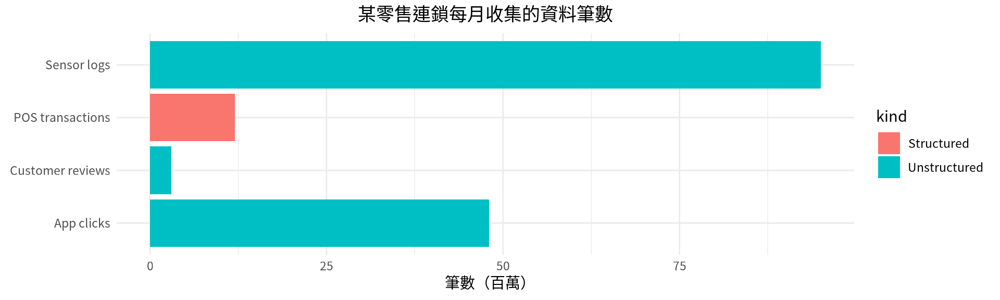

[1] 4 8 7 2 9 1 0 0 0 0 4 7 1 2 3 4 7 8 6 8 1 5 4 8 1 6 6 0 4 0 5 3 5 5 1 1 2 7
[39] 3 7 6 0 9 3 0 4 9 2 0 9 [1] 15 21 12 48 31 28 43 9 22 27第14章：抽樣與模擬
實踐大學
2026-10-08
第14章說明研究者如何取得樣本、調查問卷如何造成偏誤、如何以隨機數字進行模擬，以及巨量資料。
| 節次 | 主題 |
|---|---|
| 14-1 | 為何使用樣本；無偏與偏誤樣本；四種偏誤；四種基本抽樣方法與其他方法 |
| 14-2 | 調查的型式；撰寫題目的五個常見錯誤；其他回答偏誤來源；開放式與封閉式題目 |
| 14-3 | 模擬技術；蒙地卡羅法的五個步驟；隨機數字 |
| 14-4 | 巨量資料；3V 與變異性；結構化與非結構化資料 |
讀完本章後，你應該能夠
蓋洛普（Gallup）、尼爾森（Nielsen）等民調機構以及美國人口普查局，都是藉由從界定清楚的母體中選取樣本來收集資訊。如同第1章所述，樣本中的研究對象是母體研究對象的一個子群，而用來選取他們的抽樣方法都仰賴隨機數字。
在第1章中，母體定義為研究中的所有對象（人或非人）。由於有些母體非常龐大，研究者無法使用每一個個體，因此必須選取樣本。嚴格來說，母體的任何子群都可稱為樣本；但研究者若要對母體特徵做出有效推論，樣本就必須是隨機的。
隨機樣本
樣本要成為隨機樣本，母體中的每一個成員都必須有相同的被選中機會。
無偏樣本與偏誤樣本
當樣本是從母體隨機選出時，稱為無偏樣本，也就是說樣本大體上能代表母體。
若樣本選取方式不當，就可能成為偏誤樣本。當選取研究對象的過程中出現某種系統性誤差時，樣本即為偏誤樣本。
樣本產生偏誤的途徑
| 偏誤類型 | 發生時機 |
|---|---|
| 抽樣偏誤（選樣偏誤） | 某些對象比其他對象更容易被納入調查或研究 |
| 無回應偏誤 | 未回答調查題目的人，其答案會與有回答者不同 |
| 回應偏誤（訪員偏誤） | 受訪者給出的答案與他真正相信的並不相同 |
| 自願者偏誤 | 使用自願者，他們可能對調查或研究更有興趣，因而與隨機選出的對象回答或參與的方式不同 |
抽樣的三個理由
這並不表示樣本愈小愈好，事實正好相反。一般而言，只要抽樣技術正確，較大的樣本能提供關於母體更可靠的資訊。
若樣本在所有特徵上都是母體的完美縮影當然最理想。但這個理想無法達成，因為人的特質實在太多（身高、體重、智商等等）。我們能做到的，是選出在某些特徵上具代表性的樣本，最好是與研究主題有關的特徵。
例如，若母體中有一半是女性，樣本中也應約有一半是女性；年齡、社經地位與智商等其他特徵也應按比例呈現。
為了取得無偏樣本，統計學家發展出幾種基本抽樣方法，最常見的是隨機、系統、分層與群集抽樣。
隨機樣本是使用隨機數字等方法取得的，而隨機數字可由計算機、電腦或表格產生。隨機抽樣的基本要求是：對於大小為 n 的樣本，母體中所有大小相同的可能樣本都有相同的被選中機會。
注意
下列三種常見做法不是隨機抽樣，因為並非所有特定大小的可能樣本都有相同的被選中機會：
如何選取隨機樣本
方法一。 將母體的每個元素編號，把號碼寫在卡片上，放進帽子或魚缸中充分混合後抽出。號碼必須充分混合；有時抽出的號碼正好都是最後放進去的那些。
方法二（較佳）。 使用隨機數字表，例如附錄A的Table A-1，或使用電腦產生的隨機數字。
隨機樣本可以放回或不放回選取。若母體中同一成員在研究中不能重複使用，則為不放回抽樣——某個隨機號碼一旦被選中，就不能再被使用。
60035 97320 62543 61404 94367 07080 66112 56180 15813 15978
64072 76075 91393 88948 99244 60809 10784 36380 05721 24481
14914 85608 96871 74743 73692 53664 67727 21440 13326 98590
93723 60571 17559 96844 88678 89256 75120 62384 77414 24023
86656 43736 62752 53819 81674 43490 07850 61439 52300 55063
31286 27544 44129 51107 53727 65479 09688 57355 20426 44527
95519 78485 20269 64027 53229 59060 99269 12140 97864 31064
78019 75498 79017 22157 22893 88109 57998 02582 34259 11405
45487 22433 62809 98924 96769 24955 60283 16837 02070 22051
64769 25684 33490 25168 34405 58272 90124 92954 43663 39556隨機數字背後的原理是：0 到 9 的每個數字出現的機率都相同，在每10個數字的序列中，每個數字出現的機率為 \dfrac{1}{10}。這並不表示每個10位數的序列都會包含所有數字，而是表示平均而言每個數字會出現一次——數字2可能在某個10位數序列中出現3次，在後續序列中一次也沒有，平均起來機率仍是 \dfrac{1}{10}。
[1] 4 8 7 2 9 1 0 0 0 0 4 7 1 2 3 4 7 8 6 8 1 5 4 8 1 6 6 0 4 0 5 3 5 5 1 1 2 7
[39] 3 7 6 0 9 3 0 4 9 2 0 9 [1] 15 21 12 48 31 28 43 9 22 270 到 9 每個數字出現的機會相同，因此第一段程式重現了隨機數字表的行為。第二段從 1 到 50 抽出十個數字且不放回，這正是 sample() 的預設行為。
超商門市稽核
某超商連鎖在北台灣共有 50 家門市，想派神祕客前往部分門市查訪。稽核預算只夠查訪 10 家門市，總部希望隨機決定名單，讓各區督導無法事先預測誰會被查。請從 50 家門市中選出 10 家的隨機樣本。（模擬資料）
注意：本題答案並不唯一。
回到 範例 14-2
解題
步驟 1. 把每家門市從 1 編號到 50。這裡依門市所在行政區的英文字母順序編號。
01. Bade 14. Luzhou 27. Shilin 40. Wulai
02. Bali 15. Luzhu 28. Shimen 41. Xindian
03. Banqiao 16. Nangang 29. Shuangxi 42. Xinyi
04. Beitou 17. Neihu 30. Shulin 43. Xinzhuang
05. Daan 18. Pinglin 31. Songshan 44. Xizhi
06. Datong 19. Pingxi 32. Taishan 45. Yangmei
07. Daxi 20. Pingzhen 33. Tamsui 46. Yingge
08. Gongliao 21. Ruifang 34. Taoyuan 47. Yonghe
09. Guishan 22. Sanchong 35. Tucheng 48. Zhonghe
10. Jinshan 23. Sanxia 36. Wanhua 49. Zhongli
11. Keelung 24. Sanzhi 37. Wanli 50. Zhongshan
12. Linkou 25. Shenkeng 38. Wenshan
13. Longtan 26. Shiding 39. Wugu解題
步驟 2. 用隨機數字表找一個起點：閉上眼睛，把手指隨意點在表上。這裡點到第三欄的第一個數字 62543，取最後兩位數字 4 與 3，所以第一個隨機數字是 43。
沿著該欄往下讀。下一個數字是 91393，但 93 超出 1 到 50 的範圍，跳過。讀到欄底就從下一欄的最上方繼續。若同一個數字出現兩次也要跳過：74743 再次給出 43，而 43 已經在樣本中了。
十個隨機數字為 43,\ 29,\ 17,\ 09,\ 04,\ 48,\ 44,\ 19,\ 07,\ 27
解題
步驟 3. 這些號碼對應到下列門市，神祕客將前往查訪：
| 號碼 | 門市 | 號碼 | 門市 |
|---|---|---|---|
| 43 | Xinzhuang | 48 | Zhonghe |
| 29 | Shuangxi | 44 | Xizhi |
| 17 | Neihu | 19 | Pingxi |
| 09 | Guishan | 07 | Daxi |
| 04 | Beitou | 27 | Shilin |
解題
以 R 做同樣的選取
branches <- c(
"Bade","Bali","Banqiao","Beitou","Daan","Datong","Daxi","Gongliao","Guishan","Jinshan",
"Keelung","Linkou","Longtan","Luzhou","Luzhu","Nangang","Neihu","Pinglin","Pingxi","Pingzhen",
"Ruifang","Sanchong","Sanxia","Sanzhi","Shenkeng","Shiding","Shilin","Shimen","Shuangxi","Shulin",
"Songshan","Taishan","Tamsui","Taoyuan","Tucheng","Wanhua","Wanli","Wenshan","Wugu","Wulai",
"Xindian","Xinyi","Xinzhuang","Xizhi","Yangmei","Yingge","Yonghe","Zhonghe","Zhongli","Zhongshan")
branches[c(43, 29, 17, 9, 4, 48, 44, 19, 7, 27)] [1] "Xinzhuang" "Shuangxi" "Neihu" "Guishan" "Beitou" "Zhonghe"
[7] "Xizhi" "Pingxi" "Daxi" "Shilin" 注意
隨機抽樣有一項限制：若母體極為龐大，為樣本元素編號與選取會非常耗時。
系統樣本
系統樣本是將母體中每個元素編號，選定一個隨機起點，然後每隔第 k 個元素（第三、第五、第十個等）選取一個納入樣本而得到的樣本。
系統性的稽核排程
使用 範例 14-1 中 50 家門市的母體，選出 10 家門市的系統樣本。
解題
步驟 1. 如範例 14-1 那樣為母體單位編號。
步驟 2. 共有 50 家門市而要選出 10 家，規則是每隔第 5 家選一家。這個規則來自 50 除以 10 等於 5。
步驟 3. 用隨機數字表隨機選出第一個號碼（1 到 5）。此處選到的是 2。
步驟 4. 從 2 開始，每隔第五個號碼選一個。
2,\ 7,\ 12,\ 17,\ 22,\ 27,\ 32,\ 37,\ 42,\ 47
解題
選出的門市為：
| 號碼 | 門市 | 號碼 | 門市 |
|---|---|---|---|
| 2 | Bali | 27 | Shilin |
| 7 | Daxi | 32 | Taishan |
| 12 | Linkou | 37 | Wanli |
| 17 | Neihu | 42 | Xinyi |
| 22 | Sanchong | 47 | Yonghe |
系統抽樣的優點是選取樣本元素十分容易。許多情況下母體單位的編號清單早已存在，例如工廠經理手上的員工名冊或公司內部電話簿。
注意
必須留意清單上各項目的排列方式。
分層樣本
分層樣本是把母體依各種同質（相似）特徵分成若干子群（稱為層），再從每一層中隨機選取成員所組成的樣本。
例如，母體可能由男性、女性與吸菸者、非吸菸者組成。研究者把母體分成四個子群——吸菸男性、不吸菸男性、吸菸女性、不吸菸女性——再從每個子群隨機抽樣。這樣可確保樣本在性別與吸菸與否上具代表性，但在其他特徵上未必具代表性。
選取會員公司
某出口商公會有下列 20 家會員公司，每家依產業（電子或食品）與規模（小型或大型）分類。請以分層抽樣，依產業與規模選出 8 家公司的樣本。（模擬資料）
1. Aurora Tech E S 11. Helios Optics E L
2. Harvest Sauce F L 12. Ruby Fruit F L
3. Camellia Tea F S 13. Orchid Circuits E S
4. Beacon Semi E L 14. Pomelo Foods F S
5. Jade Snack F S 15. Granite Boards E L
6. Kingfisher Micro E S 16. Silver Carp Foods F L
7. Skyline Vision E L 17. Zenith Modules E S
8. Golden Grain F L 18. Willow Bakery F S
9. Lotus Noodle F S 19. Summit Cable E L
10. Nimbus Devices E S 20. Teal Bean Foods F LE 為電子、F 為食品；S 為小型、L 為大型。
解題
步驟 1. 把母體分成兩個子群：電子業與食品業。
步驟 2. 再把每個子群細分為小型公司與大型公司。
Group 1 (E, S) Group 2 (E, L)
1. Aurora Tech 1. Beacon Semi
2. Kingfisher Micro 2. Skyline Vision
3. Nimbus Devices 3. Helios Optics
4. Orchid Circuits 4. Granite Boards
5. Zenith Modules 5. Summit Cable
Group 3 (F, S) Group 4 (F, L)
1. Camellia Tea 1. Harvest Sauce
2. Jade Snack 2. Golden Grain
3. Lotus Noodle 3. Ruby Fruit
4. Pomelo Foods 4. Silver Carp Foods
5. Willow Bakery 5. Teal Bean Foods解題
步驟 3. 決定每個子群要選幾家公司才能按比例代表母體。共有四個群、總共要 8 家公司，因此每個子群各選 2 家。
步驟 4. 用隨機數字從每個群中各選 2 家。此處得到的隨機號碼為
| 第 1 群 | 第 2 群 | 第 3 群 | 第 4 群 |
|---|---|---|---|
| 第 4 與第 3 家 | 第 4 與第 2 家 | 第 5 與第 3 家 | 第 2 與第 3 家 |
分層樣本因此由下列公司組成：
| Orchid Circuits | Granite Boards |
| Nimbus Devices | Skyline Vision |
| Willow Bakery | Golden Grain |
| Lotus Noodle | Ruby Fruit |
解題
準備資料
members <- data.frame(
company = c("Aurora Tech","Harvest Sauce","Camellia Tea","Beacon Semi","Jade Snack",
"Kingfisher Micro","Skyline Vision","Golden Grain","Lotus Noodle","Nimbus Devices",
"Helios Optics","Ruby Fruit","Orchid Circuits","Pomelo Foods","Granite Boards",
"Silver Carp Foods","Zenith Modules","Willow Bakery","Summit Cable","Teal Bean Foods"),
industry = c("Electronics","Food","Food","Electronics","Food",
"Electronics","Electronics","Food","Food","Electronics",
"Electronics","Food","Electronics","Food","Electronics",
"Food","Electronics","Food","Electronics","Food"),
size = c("Small","Large","Small","Large","Small",
"Small","Large","Large","Small","Small",
"Large","Large","Small","Small","Large",
"Large","Small","Small","Large","Large")
)
table(members$industry, members$size)
Large Small
Electronics 5 5
Food 5 5解題
每一層各抽兩家公司
# A tibble: 8 × 3
# Groups: industry, size [4]
company industry size
<chr> <chr> <chr>
1 Granite Boards Electronics Large
2 Skyline Vision Electronics Large
3 Orchid Circuits Electronics Small
4 Nimbus Devices Electronics Small
5 Golden Grain Food Large
6 Ruby Fruit Food Large
7 Willow Bakery Food Small
8 Lotus Noodle Food Small四層各貢獻兩家公司，因此兩種產業與兩種規模都被代表到。
分層抽樣
主要優點。 它確保所有對研究重要的母體子群都被呈現。
兩個主要缺點。
群集樣本
群集樣本是選取一個既有或自然形成的群體（稱為群集），並以該群集的成員作為樣本。
教育領域的許多研究使用既有的班級，例如威爾遜國中的七年級。也可能調查某選區的選民對市長候選人的看法，或調查整個街廓住戶的家庭收入。研究者可在可行時使用群集中的所有單位，也可用隨機方法只選取群集的一部分。
群集抽樣
三項優點。 群集樣本（1）可降低成本、（2）可簡化實地工作、（3）方便。在一項為四年級學生照牙齒X光的研究中，只要選一個班級並把X光設備搬到學校即可；其他抽樣方法可能得把機器運到好幾所學校，或把學生載到牙科診所。
主要缺點。 群集中的元素在特徵上的變異可能不同於從母體逐一選出的元素，因為住在同一社區或參加同一社團等特定群集中的人往往較為同質——收入相近、開類似的車、住類似的房子，生活習慣也大致相似。
另外四種方法
序列抽樣用於品質管制，對生產線上連續產出的單位抽樣，以確保產品符合製造公司所訂的標準。
雙重抽樣先對很大的母體發問卷，以判定哪些人符合研究資格。問卷經檢視後界定出第二個較小的母體，再從這個群體中選取樣本。
多階段抽樣使用多種抽樣方法的組合。
便利抽樣從母體中選取隨手可得的對象。這種樣本通常無法代表母體，使用它可能導致偏誤的結論。
假設某研究機構想為一項新製造的產品進行全國性調查，可以用下列方法組合取得樣本。
這個假想例子說明了典型的多階段抽樣方法。
九個步驟
| 步驟 | 內容 |
|---|---|
| 1 | 決定需要哪些資訊。 |
| 2 | 決定資料如何收集（電話訪問、郵寄調查等）。 |
| 3 | 選定資訊收集工具，若無現成問卷則自行設計。 |
| 4 | 盡可能建立抽樣清單。 |
| 5 | 選出取得樣本的最佳方法（隨機、系統、分層、群集或其他）。 |
| 6 | 執行調查並收集資料。 |
| 7 | 整理資料。 |
| 8 | 進行統計分析。 |
| 9 | 報告結果。 |
答案取決於好幾件事。兩個重要考量是時間與金錢：研究者擁有的時間與金錢愈多，樣本就能愈大。使用隨機樣本時，較大的樣本可得到較可靠的結論。
此外，如第7章所示，只要研究者知道信心水準與精確度（容許誤差），就能算出實際所需的樣本數。
當一群個體被要求回答關於某個主題的問題時，就是在進行調查。
兩種調查類型
訪員執行的調查需要有人來提問。訪談可在辦公室、街上或賣場面對面進行，也可透過電話。
自行填答的調查可透過郵寄、電子郵件、網際網路，或在教室等團體場合進行。
分析調查結果時必須非常小心詮釋，因為問題的措辭方式會影響人們的回答。
| 提問方式 | 贊成 | 反對 |
|---|---|---|
| 你是否贊成對一次性購物袋收取少額費用，以減少城市的塑膠廢棄物？ | 78% | 18% |
| 是否應該讓消費者對超商所發的每一個購物袋都多付一筆新的費用？ | 34% | 59% |
兩題問的是同一項政策，回答却幾乎完全相反：前者說出了收費的目的，後者只說出了成本。同一個問題的不同措辭，會得到不同的答案。（模擬資料）
應避免的錯誤
注意
兩種題型
開放式題目如：「請列出三項你退休後打算多花時間去做的活動。」
封閉式題目如：「退休後你打算多花時間做下列哪一項活動：旅行、外食、釣魚與打獵、運動、探親？」
取捨。 封閉式題目迫使受訪者只能從研究者給的選項中挑選，無法提供自己的答案；開放式題目的結果則可能極為分歧，難以（甚至無法）彙整。
良好做法
問卷有助研究者取得所需的統計資訊，但設計與使用必須非常審慎，否則結果將不可靠。
許多真實世界的問題可以用模擬技術來解決。
模擬技術
模擬技術是用機率實驗來模仿真實生活情境。
研究者不直接研究可能過於昂貴、危險或耗時的實際情境，而是建立一個類似但較便宜、較安全或較省時的情境。NASA使用太空梭飛行模擬器讓太空人練習駕駛，大多數電玩也用電腦模擬真實運動。
模擬技術可追溯到古代——西洋棋就是為了模擬戰爭而發明的。現代技術始於1940年代中期，兩位物理學家 John Von Neumann 與 Stanislaw Ulam 發展出模擬技術，用以研究原子反應爐設計中中子的行為。
數學模擬技術使用機率與隨機數字來建立類似真實問題的條件。電腦在模擬中扮演重要角色，因為它產生隨機數字、執行實驗、統計結果與計算機率的速度遠快於人類。
蒙地卡羅法
蒙地卡羅法是使用隨機數字的模擬技術。商業與工業界以蒙地卡羅模擬技術解決極為困難或牽涉大量變數的問題。
五個步驟
| 步驟 | 內容 |
|---|---|
| 1 | 列出實驗所有可能的結果。 |
| 2 | 決定每個結果的機率。 |
| 3 | 建立實驗結果與隨機數字之間的對應。 |
| 4 | 從表中選取隨機數字並執行實驗。 |
| 5 | 計算所需統計量並陳述結論。 |
把結果對應到隨機數字
| 實驗 | 對應方式 |
|---|---|
| 擲一枚硬幣 | 兩種結果機率各為 \frac{1}{2}：奇數 1、3、5、7、9 代表正面；偶數 0、2、4、6、8 代表反面 |
| 擲一顆骰子 | 數字 1、2、3、4、5、6 代表點數；7、8、9、0 因為擲不出來而略過 |
| 擲兩顆骰子 | 需要兩個隨機數字：26 表示第一顆為 2、第二顆為 6；37 中的 7 不能使用，必須另選一個數字 |
| 三位數的每日樂透號碼 | 使用三位數的隨機數字 |
| 四格轉盤（圖 14-3） | 每個數字機率為 \frac{1}{4}：1 與 2 代表 1、3 與 4 代表 2、5 與 6 代表 3、7 與 8 代表 4；9 與 0 略過 |
隨機數字 8631 代表擲同一枚硬幣四次，結果為 T、T、H、H；也可代表同時擲四枚硬幣得到相同結果。
[1] "T" "T" "H" "H" [1] 6 4 1 4 6 1 1 2 3 4 [1] 2 4 3 4 4 2 4 2 2 1第一行把硬幣的對應規則套用在上表的數字 8631 上。後兩行則根本不需要對應規則：直接從 1:6 與 1:4 抽樣，就已經排除了骰子與四格轉盤擲不出來的數字。
外送平台的遲到訂單
某外送平台在一個行政區的訂單中，有 40% 會晚於承諾時段送達（模擬資料）。請用隨機數字模擬 20 筆訂單的樣本，並數出其中有幾筆遲到。
解題
40% 即 \dfrac{40}{100} = \dfrac{4}{10}，所以每 10 筆訂單中有 4 筆晚於承諾時段送達。
使用隨機數字表時，把數字 1、2、3、4 指派給遲到的訂單，把 5 到 9 與 0 指派給準時送達的訂單。
接著讀取 20 個隨機數字，數出有幾個落在 \{1, 2, 3, 4\} 之中。
解題
以 R 模擬這 20 筆訂單
[1] 8 8 6 0 9 5 2 2 8 2 2 1 3 4 0 0 5 7 9 4[1] 8[1] 0.420 筆模擬訂單中有 8 筆遲到，比例 0.4，恰好等於理論值 0.40。答案在於對應規則而不在於某一組數字；換一組隨機數字會得到在 40% 上下擺盪的不同結果。
承攬運送標案
兩家承攬運送業者 Northline 與 Southport 競標出口貨物的運送案，Northline 得標的次數是 Southport 的兩倍。請用隨機數字模擬連續 5 個標案的結果。（模擬資料）
解題
由於 Northline 得標次數是 Southport 的兩倍，Northline 得標的機率為 \dfrac{2}{3}，Southport 得標的機率為 \dfrac{1}{3}。
用隨機數字 1 到 6 代表 Northline 得標，7、8、9 代表 Southport 得標，0 不計。
五個隨機數字即構成一組 5 個標案的序列。
解題
以 R 套用同樣的對應規則
[1] 9 4 1 1 3winner
Northline Southport
4 1 從 1:9 而非 0:9 抽樣，就是「0 不計」這道指示的寫法。抽到的數字為 9、4、1、1、3，因此 Northline 拿下 5 個標案中的 4 個，Southport 拿下 1 個。
檢查出口貨櫃
某貨櫃場中，每 6 個貨櫃就有 1 個的出口文件有誤（模擬資料）。檢查員一次開一個貨櫃，直到出現第一個文件有誤的貨櫃為止。請用模擬求出平均要開幾個貨櫃，實驗進行 20 次。
解題
步驟 1. 列出檢查一個貨櫃的所有可能結果。把六種等可能的檢查結果編號為 1、2、3、4、5、6，並令 6 代表文件有誤。
步驟 2. 決定各結果的機率。每個結果的機率都是 \dfrac{1}{6}。
步驟 3. 建立隨機數字與結果的對應。使用隨機數字 1 到 6，略過 7、8、9 與 0。
步驟 4. 取一段隨機數字，逐一計入 1 到 6 的數字，直到第一次出現 6 為止。例如 40719236 這段表示開了 5 個貨櫃，因為 0、7、9 被略過，檢查結果依序為 4、1、2、3、6。
解題
步驟 4（續）. 下方程式模擬出的 20 次試驗結果為：
Trial Containers opened Trial Containers opened
1 1 11 5
2 7 12 11
3 4 13 8
4 9 14 8
5 2 15 1
6 2 16 6
7 1 17 5
8 2 18 12
9 11 19 8
10 9 20 2
Total 114解題
步驟 5. 計算結果並作出結論。此處要求的是平均數：
\bar{X} = \frac{\Sigma X}{n} = \frac{114}{20} = 5.7
因此，平均約要開 6 個貨櫃。
注意： 首次成功的等待次數其期望值為 \dfrac{1}{p} = \dfrac{1}{1/6} = 6，所以理論平均值是 6。若實驗重複很多次，例如 1000 次，結果會更接近理論值。
找出正確的棧板
物流中心的揀貨員被告知某位顧客的訂單放在 4 個外觀相同的棧板其中之一。她一次檢查一個棧板，順序隨機，直到找到訂單為止。請求出平均要檢查幾個棧板，實驗進行 25 次。（模擬資料）
解題
步驟 1. 列出實驗的所有可能結果：棧板 1、棧板 2、棧板 3、棧板 4。
步驟 2. 決定各結果的機率。棧板是隨機檢查的且共有 4 個，因此每個棧板最先被檢查的機率都是 \dfrac{1}{4}。
步驟 3. 建立隨機數字與結果的對應。把棧板編號 1 到 4，並假設訂單放在棧板 2。揀貨員並不知道這件事，因此依隨機順序檢查。模擬時只讀取 1 到 4 的隨機數字、跳過重複的數字，直到出現數字 2 為止。
解題
步驟 4. 再重複實驗 24 次。下方程式模擬出的 25 次試驗結果為：
Trial Pallets checked Trial Pallets checked
1 2 14 4
2 2 15 3
3 3 16 3
4 4 17 3
5 2 18 3
6 1 19 4
7 3 20 4
8 1 21 3
9 2 22 2
10 3 23 3
11 4 24 2
12 2 25 3
13 1 Total 67解題
步驟 5. 計算統計量並作出結論。求平均數：
\bar{X} = \frac{\Sigma X}{n} = \frac{2 + 2 + \cdots + 3}{25} = \frac{67}{25} = 2.68
理論平均值為 2.5，因為訂單出現在第一、第二、第三或第四個被檢查的棧板上的機會相同。這裡只重複了 25 次；重複次數愈多，結果就愈接近理論平均值。
刮刮卡促銷活動
某超商連鎖舉辦刮刮卡促銷活動。每 10 張卡中有 5 張價值 NT$50、3 張價值 NT$100、2 張價值 NT$300（模擬資料）。顧客隨機刮開一張卡，請問一張卡的期望值是多少？請進行 25 次實驗。
解題
步驟 1. 列出所有可能結果：NT$50、NT$100 與 NT$300。
步驟 2. 指派各結果的機率：
P(50) = \frac{5}{10} \qquad P(100) = \frac{3}{10} \qquad P(300) = \frac{2}{10}
步驟 3. 建立隨機數字與結果的對應。用隨機數字 1 到 5 代表 NT$50 的卡，6 到 8 代表 NT$100 的卡，9 與 0 代表 NT$300 的卡。
解題
步驟 4. 取 25 個隨機數字並整理結果。
Number Results (NT$)
96569 300, 100, 50, 100, 300
56685 50, 100, 100, 100, 50
53749 50, 50, 100, 50, 300
52625 50, 50, 100, 50, 50
43420 50, 50, 50, 50, 300步驟 5. 計算平均數：
\bar{X} = \frac{\Sigma X}{n} = \frac{300 + 100 + 50 + \cdots + 300}{25} = \frac{2600}{25} = 104
因此，模擬得到的一張卡平均價值為 NT$104。
解題
回想期望值公式 E(X) = \Sigma[X \cdot P(X)]，理論平均值為
E(X) = (0.5)(50) + (0.3)(100) + (0.2)(300) = 115
以 R 重現這 25 次抽取
[1] 300 100 50 100 300 50 100 100 100 50 50 50 100 50 300 50 50 100 50
[20] 50 50 50 50 50 300[1] 2600[1] 104ifelse() 套用步驟 3 的對應規則：數字 1 到 5 為 NT$50，6 到 8 為 NT$100，9 與 0 為 NT$300。
注意
請記住，模擬技術不會給出精確結果。實驗做的次數愈多，實際結果就愈接近理論結果（回想大數法則）。
| 範例 | 模擬結果 | 理論結果 |
|---|---|---|
| 14-6 檢查貨櫃 | 5.7 個 | 6 個 |
| 14-7 找棧板 | 2.68 個 | 2.5 個 |
| 14-8 刮刮卡 | NT$104 | NT$115 |
在遊戲節目中主持人讓參賽者從三扇門中選一扇，其中一扇門後有獎品。參賽者選定後，主持人打開另一扇沒有獎品的門，並問參賽者要不要換門。換門時贏得獎品的機率為 \dfrac{2}{3}，輸的機率為 \dfrac{1}{3}。
[1] 0.6672換門會贏，剛好就是第一次選錯的情形，因此主持人打開哪一扇門根本不必模擬。模擬得到的獲勝率為 0.6672，理論值為 \dfrac{2}{3} \approx 0.667。
隨著電腦問世與容量不斷擴充，企業每天都能取得大量資料，因此一個相對新的資料應用領域——巨量資料——正在興起。
巨量資料
凡具備下列三項特徵的資料，即定義為巨量資料：
數量、速度、多樣性與變異性
| V | 意義 |
|---|---|
| 數量（Volume） | 資料集極為龐大 |
| 速度（Velocity） | 資料集的規模成長得非常快 |
| 多樣性（Variety） | 資料集中含有極為廣泛的資料種類 |
| 變異性（Variability） | 資料可在不同時點收集，例如按月、按季或按事件 |
前三項特徵稱為巨量資料的 3V，最早由產業分析師 Doug Laney 提出。
兩種資料
結構化資料是能以列與欄的表格形式呈現的資料，數字、姓名、日期、性別、收入與詞組都是例子。
非結構化資料是使用文字與影像的資料，簡訊、對企業的評論、電子郵件、照片，以及以文字與影像描述各種情況的資料都屬此類。
今日組織所收集的資料多半是非結構化的：每有一筆能整齊放進列與欄的交易紀錄，就有更多的評論、電子郵件、照片、語音檔與感測器紀錄無法這樣處理。
order_id date amount store
1 1 2026-03-05 245 Taipei
2 2 2026-03-06 138 Kaohsiung
3 3 2026-03-06 1020 Taipei[1] 45 30訂單可直接排序、平均與合併；評論則無法如此處理。
輸出圖形——某零售連鎖每月的資料量（模擬資料）
monthly_records <- data.frame(
source = c("POS transactions", "App clicks", "Customer reviews", "Sensor logs"),
kind = c("Structured", "Unstructured", "Unstructured", "Unstructured"),
millions = c(12, 48, 3, 95)
)
ggplot(monthly_records, aes(millions, source, fill = kind)) +
geom_col() +
labs(title = "某零售連鎖每月收集的資料筆數",
x = "筆數（百萬）", y = NULL)
巨量資料集來自各種來源。
必須考慮的事
資料可以每天持續收集。在製造流程中，信用卡使用的資訊會被記錄；在醫療照護中，疾病、治療與病患治療成效的紀錄也會被保存。
機器產生與人工產生的資料
資料可以是機器產生、電腦產生或人工產生；有時資料是由人工與機器產生流程的組合取得。
巨量資料的第二個面向是如何儲存、存放在哪裡。必須把資料結構化，才能取回來分析。由於收集到的資料種類繁多，這是個複雜的過程。
例如，單筆信用卡交易就可能包含顧客姓名、地址、電話、卡別、卡號、購買品項、消費金額以及消費的時間與日期。
分析巨量資料集可提供資訊，協助企業主做出更好的決策、更有效率地經營事業。
舉例說明：規劃配送車隊的路線
設想一家包裹業者，貨車上裝有感測器，記錄每一次停靠、每一分鐘怠速與每一次開門。單看一輛車一天的紀錄沒什麼意思；但把數千輛車、數百萬次停靠的紀錄彙整起來，就能看出哪些轉彎、哪些配送時段與哪些街道順序最耗時間與燃料。
分析的產出是一份路線計畫：每位司機當天該依什麼順序停靠。路線變短意味著更少的燃料、更少的駕駛工時與更小的車輛損耗——這種節省在任何單日資料中都看不出來，但攤開到整個車隊與整年就相當可觀。
應用
| 領域 | 巨量資料分析的用途 |
|---|---|
| 銀行業 | 提升顧客對銀行服務的滿意度、降低詐欺、跟上其他銀行的服務 |
| 教育 | 在學生中輟前就辨識出高風險者並提供服務留住他們；追蹤學生相對於其他學校的進步；找出更好的學生評量方法 |
| 政府 | 管理公用事業與機關、減少交通壅塞、降低犯罪 |
| 醫療照護 | 保存疾病、處方、治療與康復紀錄以改善病患照護；讓醫師快速而準確地取得病歷 |
| 製造業 | 提高產出、減少浪費、對產品與服務做出穩健決策 |
| 零售業 | 找出處理顧客抱怨最有效的方式，並找回流失的顧客 |
本書中的許多統計技術，加上最佳化、關聯分析與預測等其他技術，都能運用在巨量資料上，讓我們的生活更輕鬆、更精彩。
第14章詞彙
偏誤樣本 · 巨量資料 · 群集樣本 · 便利樣本 · 雙重抽樣 · 蒙地卡羅法 · 多階段抽樣 · 隨機樣本 · 序列抽樣 · 模擬技術 · 分層樣本 · 結構化資料 · 系統樣本 · 無偏樣本 · 非結構化資料
重點
重點
Copyright notice. These teaching materials follow the organization and terminology of Bluman, A. G. (2023). Elementary statistics: A step by step approach (11th ed.). McGraw Hill. All rights in the original work are reserved by its authors and publishers.
Original examples. Every worked example, data set, and R script in these slides was written for this course. The data are hypothetical unless stated otherwise.
Non-commercial use only. These materials are strictly intended for educational purposes and must not be used for commercial gain or profit.
Proper attribution. Any reproduction, distribution, or use of these materials must provide proper attribution to the original source.

Elementary Statistics: A Step by Step Approach